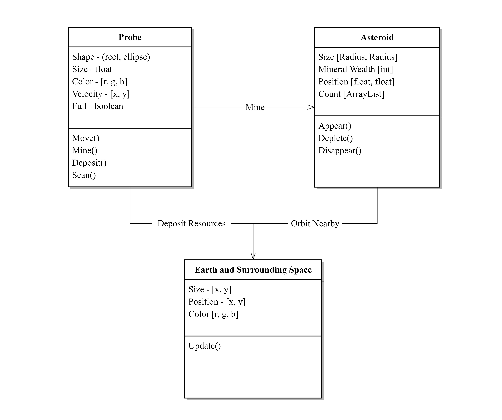

Natural Systems
Solar System Space Mining
A rudimentary system model of human mining efforts in our solar system


Why did you decide to work on this topic, what's your interest there?
Space is fascinating to me, it’s a vast expanse of uncharted territory that humans
have only ever scouted with telescopes and unmanned machines. It’s a frontier of infinite potential and
I truly do believe that the future of our civilization lies there. Space mining is simply a faucet of that future,
and it comes without all of the conflict and strings of mining here on Earth.
How did you envision your system in the beginning and how did that vision change?
Initially the system plan I had encompassed the Earth, sun, and asteroids wherein
Earth would construct mining teams using energy from the sun and minerals from asteroids before sending them out
on resource retrieval missions for the ultimate goal of developing Earth. However, the sun is a passive energy source
in real life and doesn't really need to be modeled in the system. In the end, the system was streamlined into probes,
asteroids, and the Earth: a collector, objects to be collected, and the deposit location.
How did you translate your diagram into code?
The diagram was thought in terms of code to begin with, which made the transition
relatively straightforward to understand. It helped inform what code elements needed to be implemented, how they
needed to be implemented, and the necessary interactions between them.
How did you deal with the complexity in your system?
In addition to the Processing References archive, I browsed different forums such as
Stackoverflow for troubleshooting errors and looking for solutions. In truth, the system isn’t terribly complicated.
How did you decide on the interactive elements?
The interactive elements were chosen based on how I thought a real space mining mission
would go: mission control would look for rich asteroids, send a probe for collection, mine, recall it for retrieval, repeat.
Translate that to code, and the only real interactable item would be the probe.
What would be some paths for future development of the project?
In addition to an aesthetic overhaul with vector drawings or images, I want to expand the scope
to include a full model of the solar system and add more complexity to mineral collection beyond an arbitrary score metric.
Asteroids should contain different kinds of minerals which can be used for construction of human space installations, perhaps.
Bits and Pieces of Code
// horizontal movement, speed is calculated by multiplying a fraction of the distance between the mouse position and probe position
float targetX = mouseX;
float distanceX = targetX - position.x;
position.x += distanceX * speed;
// vertical movement, speed is calculated by multiplying a fraction of the distance between the mouse position and probe position
float targetY = mouseY;
float distanceY = targetY - position.y;
position.y += distanceY * speed;
// the probe will passively scan the ArrayList, check which object is the closest and will "lock on" to it
so that other functions affect the correct item on the ArrayList in relation to the display
try {
Asteroid nearestAsteroid = asteroids.get(0);
float distance = width + height;
for (Asteroid asteroid : asteroids) {
float currdistance = dist(position.x, position.y, asteroid.position.x, asteroid.position.y);
if (currdistance <= distance) {
nearestAsteroid = asteroid;
distance = currdistance;}
}
targetAsteroid = nearestAsteroid;
} catch (Exception e) {} // prevent errors when ArrayList is empty
}
void display() {
fill(depColor);
if (minerals == 1) {
fill(poorColor);
}
if (minerals == 2) {
fill(midColor);
}
if (minerals == 3) {
fill(richColor);
}
noStroke();
ellipse(position.x, position.y, radiusL, radiusW);
}
What do Prototypes Prototype?
It is important to recognize that the degree of visual and behavioral refinement
of a prototype does not necessarily correspond to the solidity of the design, or to a particular stage in the process.
This is an issue that I’ve seen crop up in different projects during my time at ArtCenter.
There’s a certain value that we place on fidelity and sometimes a complete looking idea took precedence over a more completely
planned idea. I think that a prototype need only look as good as it needs to be in order to accurately convey a design thought,
but I can’t argue with the fact that sometimes a pretty picture has weight all on it’s own— many of us wouldn’t be designers
if we didn’t think this line of work was aesthetically pleasing. But even the most visually competent and well-tested designs
could, in fact, be a trap. Some ideas are simply more valid on a fundamental level than others for a given use case and no amount of
design patching can change that.
[Role prototyping] describes the functionality that a user might benefit from, with little attention
to how the artifact would look and feel, or how it could be made to actually work.
Role prototyping sounds like preliminary ideation and feature ideas. It offers the most creative freedom,
but I feel there’s sort of a bad rep with designers specifically involving this step. Or perhaps not designers specifically, what I mean
to say is that sometimes, out in the wilds of the modern business world, there exist people that spout off ideas without any knowledge
of the practical application and limitations of what they’re talking about. It’s important to forget those limitations sometimes in the
name of creative solution finding but, in the end, “the ideas guy” isn’t going to get anything accomplished while an engineer might have
at least something that a person can use. It makes me wonder if a company under dire financial circumstances would choose to lay off their
designers or engineers first.
At other times it became focused on problems with the user interface, such as the multiple cascading menus,
which were hard to control and visually confusing.
A problem that any prototype designer working for more than a few months can relate to. It’s a difficult issue
to avoid— a test prototype needs to at a fidelity high enough to convey a feature accurately so as to not mislead anyone on how it might be
implemented but at the same time this leaves it vulnerable to critique about it’s supporting designs (menus, input methods, etc) that aren’t
supposed to be the focus. Of course, they could be told to disregard these tertiary filler interfaces and focus on the important bits, but that
might lead to confusion in project vision amongst the team or design hiccups down the design cycle. Still, I think it’s important to not get
bogged down and teams should allow some problems to remain for at least a little while longer in the project cycle if it means that they can keep
up the momentum.